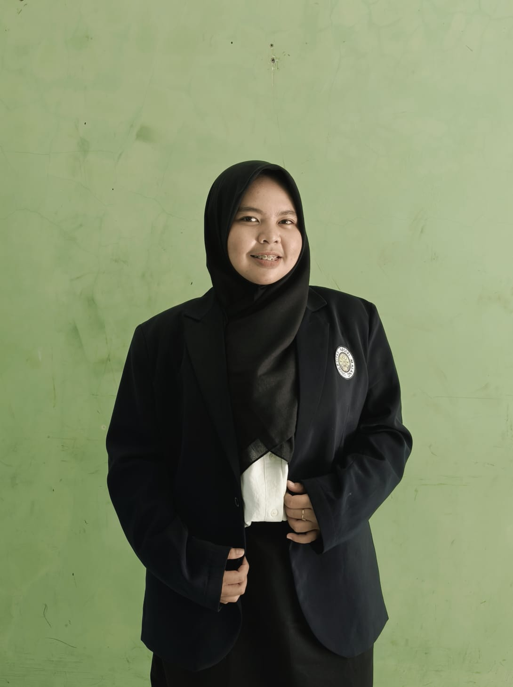

Visi Menjadi
Guru Profesional
Visi untuk Pendidikan di Indonesia
Visi saya untuk pendidikan Indonesia adalah turut mewujudkan generasi yang berkarakter baik dan memiliki pengetahuan yang memadai. Pendidikan diharapkan mampu mendukung perkembangan potensi murid sekaligus menanamkan nilai-nilai tanggung jawab dalam kehidupan sehari-hari. Selain itu, pendidikan perlu terus menyesuaikan diri dengan perkembangan zaman agar pengetahuan yang dipelajari tetap relevan dengan kebutuhan murid. Dengan demikian, murid diharapkan mampu menghadapi perubahan tanpa kehilangan karakter yang luhur.
Visi Sebagai
Calon Guru
Visi saya sebagai calon guru profesional adalah menjadi pendidik yang mampu menyeimbangkan pembentukan karakter dengan pengembangan pengetahuan murid. Saya ingin menjadi guru yang dekat dengan murid, tetapi tetap tegas dalam menanamkan kedisiplinan dan tanggung jawab. Saya juga ingin menjadi pendidik yang menghargai perbedaan potensi setiap murid dan memberikan ruang bagi mereka untuk berkembang sesuai dengan kebutuhannya. Selain itu, saya ingin menjadi guru yang adaptif terhadap perkembangan zaman dan mampu menyesuaikan pembelajaran dengan kebutuhan murid serta kondisi lingkungan.

Upaya Pewujudan Visi
Mewujudkan Visi melalui
Praktik Pembelajaran
Visi diwujudkan melalui berbagai upaya dalam merancang, melaksanakan, serta mengevaluasi pembelajaran. Setiap upaya diarahkan untuk mengembangkan kompetensi sebagai guru sekaligus menghadirkan pengalaman belajar yang sesuai dengan kebutuhan peserta didik.
Menjadi Teladan dalam Berperilaku
Membiasakan diri untuk menunjukkan sikap positif yang dapat dilihat dan dicontoh langsung oleh murid. Hal ini dapat dilakukan dengan menyambut murid melalui salam dan sapaan yang ramah, menjaga kesopanan dalam berbicara, serta datang tepat waktu. Guru juga dapat memberikan contoh dalam menjalankan tanggung jawab, seperti ikut melaksanakan kegiatan ibadah berjamaah bersama murid sesuai dengan ketentuan sekolah. Melalui kebiasaan tersebut, murid dapat belajar memahami dan menerapkan nilai-nilai baik melalui tindakan nyata.
Membangun Hubungan yang Baik dengan Murid
Menciptakan suasana yang nyaman melalui komunikasi yang terbuka dan sikap saling menghargai. Guru dapat memulai pembelajaran dengan menyapa murid dan menanyakan kabar mereka sebelum masuk ke materi. Selain itu, memberikan kesempatan kepada murid untuk bertanya dan menyampaikan pendapat dapat membantu membangun rasa percaya diri. Guru juga perlu mendengarkan kesulitan yang disampaikan murid agar mereka merasa diperhatikan dan dihargai.
Menanamkan Kedisiplinan dan Tanggung Jawab
Membiasakan murid untuk menaati aturan dan menyelesaikan tanggung jawabnya melalui kegiatan sehari-hari di kelas. Contohnya, membiasakan murid menjaga kebersihan kelas dan mengumpulkan tugas sesuai dengan waktu yang ditentukan. Guru dapat membuat kesepakatan kelas bersama murid agar aturan yang berlaku dipahami dan dijalankan bersama. Apabila terjadi pelanggaran, guru perlu memberikan teguran dan arahan secara tegas tanpa merendahkan murid.
Memberikan Kesempatan untuk Mengembangkan Potensi Murid
Memberikan ruang kepada setiap murid untuk menunjukkan kemampuan dan mengembangkan potensi yang dimiliki. Hal ini dapat dilakukan dengan memberikan kesempatan kepada murid untuk memilih peran dalam diskusi kelompok atau menyampaikan hasil pekerjaannya di depan kelas. Guru juga perlu memberikan pendampingan kepada murid yang mengalami kesulitan serta apresiasi terhadap usaha yang telah dilakukan. Dengan demikian, setiap murid dapat memperoleh kesempatan untuk berkembang sesuai dengan kemampuan dan kebutuhannya.
Meningkatkan Pengetahuan dan Kemampuan Mengajar
Mengembangkan kemampuan diri agar dapat memberikan pembelajaran yang jelas dan sesuai dengan kebutuhan murid. Upaya ini dapat dilakukan dengan mempelajari materi dari berbagai sumber dan mengikuti pelatihan yang berkaitan dengan pendidikan. Guru juga dapat berdiskusi dengan guru lain untuk bertukar pengalaman mengenai cara mengajar dan mengatasi kesulitan belajar murid. Setelah mengajar, melakukan refleksi terhadap kegiatan pembelajaran dapat membantu menentukan hal-hal yang perlu diperbaiki pada pertemuan berikutnya.
Menyesuaikan Pembelajaran dengan Perkembangan Zaman
Mengikuti perkembangan teknologi dan informasi agar materi yang dipelajari tetap sesuai dengan kehidupan murid. Hal ini dapat diterapkan dengan menggunakan video pembelajaran atau aplikasi digital sebagai media pendukung kegiatan belajar. Guru juga dapat mengaitkan materi dengan peristiwa yang sedang terjadi atau permasalahan yang dekat dengan kehidupan sehari-hari. Dengan demikian, murid tidak hanya memperoleh pengetahuan dari buku, tetapi juga memahami penerapannya dalam kehidupan nyata.
Prinsip dalam Menjalankan Peran
Menjaga Arah dalam
Setiap Langkah
Visi menjadi arah dalam menjalankan peran sebagai calon guru. Untuk tetap berada pada arah tersebut, diperlukan nilai dan sikap yang menjadi pegangan dalam menghadapi berbagai situasi selama proses pembelajaran.
Terbuka terhadap Perubahan
Menyadari bahwa kebutuhan peserta didik dan perkembangan pendidikan terus berubah. Sikap terbuka membantu menyesuaikan diri tanpa kehilangan tujuan utama dalam mendidik.
Menjunjung Nilai dan Etika
Menjadikan nilai, etika, dan tanggung jawab sebagai dasar dalam menjalankan peran sebagai pendidik. Hal tersebut menjadi pedoman dalam bersikap serta mengambil keputusan yang berkaitan dengan peserta didik.
Menghargai Setiap Proses
Memandang keberhasilan pembelajaran sebagai proses yang membutuhkan waktu dan pengalaman. Setiap pengalaman menjadi bagian dari proses untuk mengenali kekuatan dan hal yang masih perlu dikembangkan.
Menjaga Semangat untuk Belajar
Memandang proses menjadi guru sebagai perjalanan yang terus berkembang. Kesediaan untuk belajar menjadi dasar untuk menghadapi tantangan dan meningkatkan kualitas diri sebagai pendidik.
— Indana Zulfa Semester 2 • PPG Prajabatan 2026"Saya berkomitmen untuk menjadi pendidik yang tidak hanya mengajar, tetapi juga membimbing, menginspirasi, dan memberdayakan setiap siswa untuk menjadi individu yang berkompeten, berkarakter, dan berkontribusi positif bagi masyarakat."